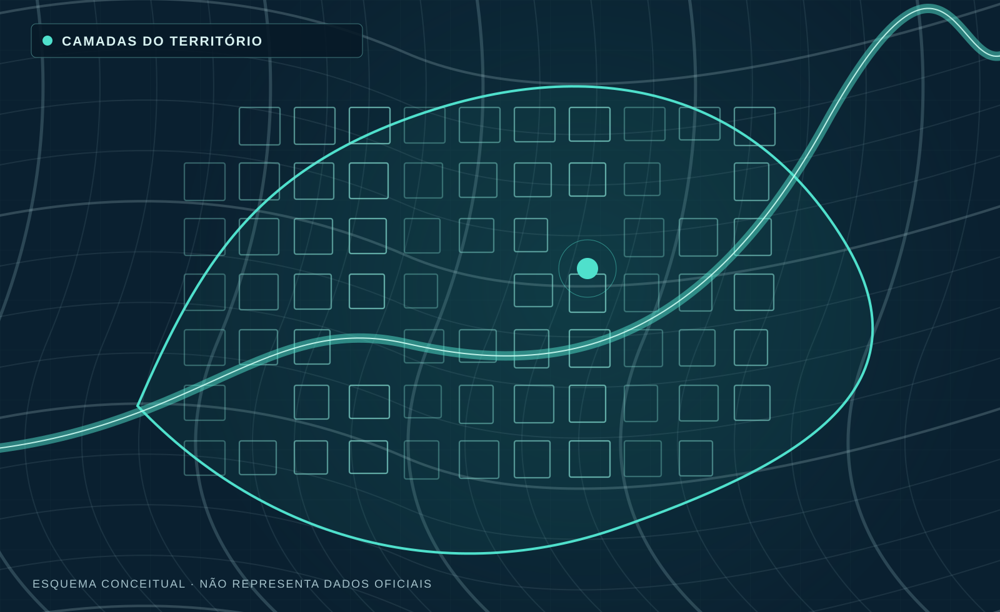
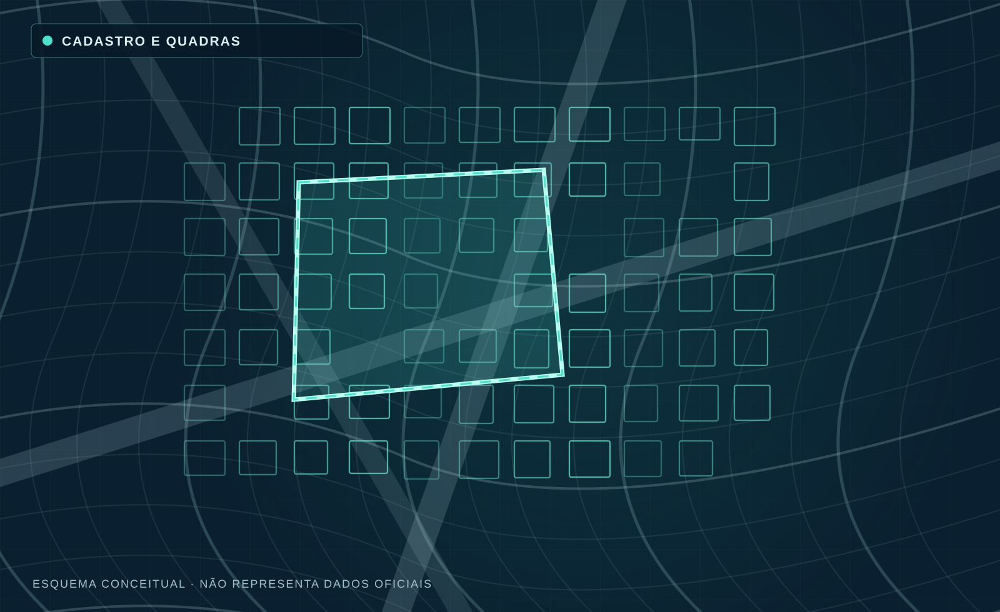
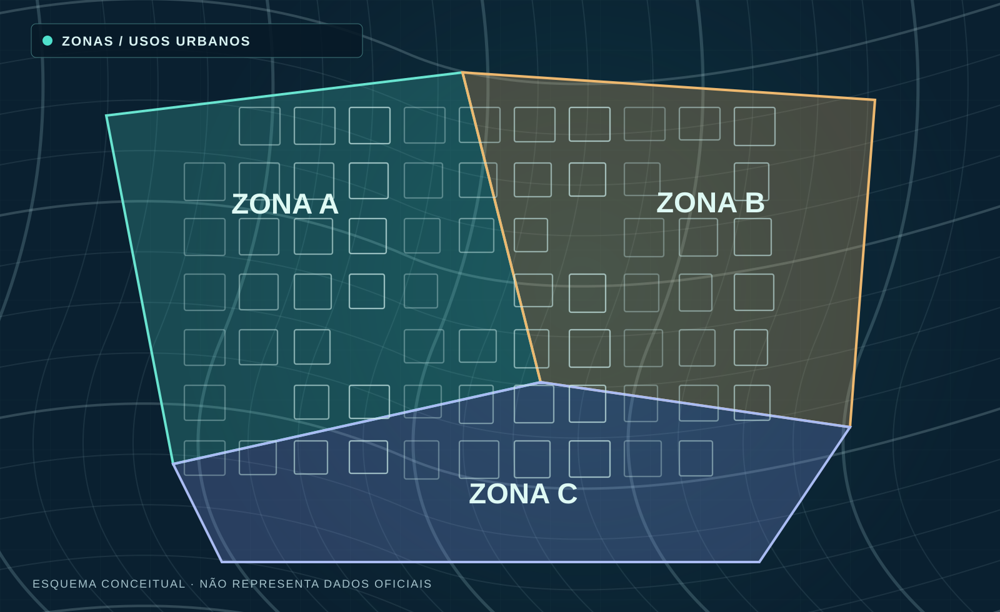
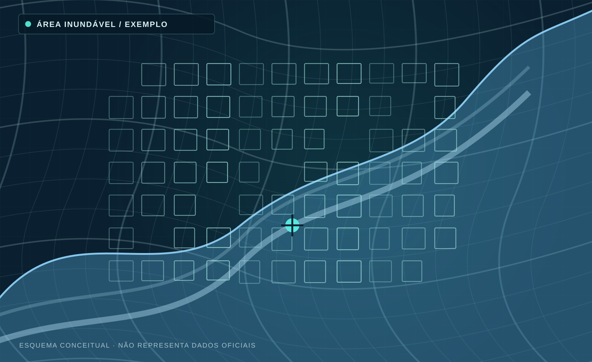

7º WEBINÁRIO GOVERNO DIGITAL / 2026
O território
se torna inteligência.
GeoCanoas — da base cartográfica às decisões públicas.
Marciano da Costa LimaEngenheiro Cartógrafo · Diretoria do GeoCanoas / SMDU

GEOCANOAS / CANOAS · RS
01 / ALCANCE MUNICIPALINDICADORES DIVULGADOS PELO PORTAL
Uma trajetória que conecta
tecnologia e gestão pública.
+10anosde geotecnologia
+100aplicaçõesdesenvolvidas
+10secretariasatendidas
01 / CONTEXTO CANOAS · RS
Um território.
Múltiplas decisões.
Planejamento, infraestrutura e riscos compartilham uma mesma questão: onde as coisas acontecem.
01TerritórioReferência comum
02InformaçãoIntegração setorial
03DecisãoAplicações concretas
02 / PORTAL DE SERVIÇOSEXPERIÊNCIA DO CIDADÃO
O geoportal aproxima
informação e serviço público.
 MAPA CADASTRAL · IMAGEM PUBLICADA PELO MUNICÍPIO
MAPA CADASTRAL · IMAGEM PUBLICADA PELO MUNICÍPIO
02 / INFRAESTRUTURA DA BASE AO SERVIÇO
O mapa é a interface.
A inteligência está na integração.
FontesCadastros e levantamentos→QualidadePadronização e revisão→ServiçosCamadas e APIs REST→AplicaçõesConsulta e análise
ORACLE ARCGIS ENTERPRISE SERVIÇOS REST WEBGIS
03 / BASE CARTOGRÁFICAINFRAESTRUTURA DE REFERÊNCIA
Uma base territorial confiável
une muitas camadas.

BASE ESPACIAL COMPARTILHADA01Lotes e quadrasGeometria e identificadores
02Logradouros e bairrosLocalização e referência comum
03Ortofotos, MDT e MDSContexto visual e altimetria
04Serviços e metadadosCompartilhamento com controle
03 / REFERÊNCIA TOPOGRÁFICAREDE GEODÉSICA
A referência geodésica
sustenta projetos precisos.
 MARCOS GEODÉSICOS · MONOGRAFIAS E COORDENADAS
MARCOS GEODÉSICOS · MONOGRAFIAS E COORDENADASAPLICAÇÃO MUNICIPALMarcos geodésicos com coordenadas e monografias para levantamentos, georreferenciamento e obras.
Fonte: Portal GeoCanoas ↗ 03 / BASE CARTOGRÁFICA CASO 01
 GEOMETRIA / LOTES / QUADRAS
GEOMETRIA / LOTES / QUADRAS04 / CONSULTA TERRITORIALMAPA CADASTRAL
O imóvel pode ser localizado
por BCI ou endereço.
 MAPA CADASTRAL · CONSULTA TERRITORIAL
MAPA CADASTRAL · CONSULTA TERRITORIAL04 / VIABILIDADE URBANÍSTICA CASO 01
Geometria e regras
produzem uma consulta inteligível.
01 · Localizar o loteBase territorial
02 · Aplicar parâmetrosPDUA, zonas e interseções
RESULTADO Menos consultas fragmentadas, mais clareza para cidadãos e técnicos.
04 / DESENVOLVIMENTO URBANOZONEAMENTO
O zoneamento traduz
regras em informação espacial.
 ZONEAMENTO URBANO · PDUA
ZONEAMENTO URBANO · PDUA04 / DESENVOLVIMENTO URBANOVIABILIDADE
A consulta prévia apoia
decisões antes do protocolo.
 CONSULTE A VIABILIDADE · APLICAÇÃO DO PORTAL
CONSULTE A VIABILIDADE · APLICAÇÃO DO PORTAL04 / DESENVOLVIMENTO URBANODOCUMENTOS
A informação urbanística
também se torna documento.
 INFORMATIVO PRÉVIO · DIRETRIZES DO PDUA
INFORMATIVO PRÉVIO · DIRETRIZES DO PDUA05 / ANÁLISE TERRITORIAL CASO 02 · ENCHENTE 2024
Informação territorial transforma
eventos em aprendizado.
Cartografia, altimetria e cadastro apoiam análises de exposição e planejamento.

ILUSTRAÇÃO CONCEITUAL · NÃO É MANCHA OBSERVADA01CaracterizarÁreas e elementos expostos
02RelacionarCadastros e altimetria
03PlanejarEstudos e prioridades
Evento observado ≠ cenário modelado ≠ restrição normativa.
05 / DEFESA CIVILMONITORAMENTO E RISCO
A leitura territorial integra
perigo e monitoramento.
 PONTOS DE RISCO
PONTOS DE RISCO INUNDAÇÃO EM CANOAS
INUNDAÇÃO EM CANOAS05 / DEFESA CIVILDADOS AMBIENTAIS
A observação hidrometeorológica
amplia a capacidade de análise.
 PLUVIÔMETROS E LINÍGRAFO
PLUVIÔMETROS E LINÍGRAFO06 / APLICAÇÕES MAPAS E SERVIÇOS
Uma infraestrutura.
Múltiplas políticas públicas.
06 / POLÍTICAS SETORIAISSAÚDE E EDUCAÇÃO
O território conecta
serviços públicos e cidadãos.
 MINHA UNIDADE DE SAÚDE
MINHA UNIDADE DE SAÚDE REDES DE ENSINO ESCOLAR
REDES DE ENSINO ESCOLAR06 / MEIO AMBIENTE E SEGURANÇASERVIÇOS TERRITORIAIS
Mapas orientam
o uso cotidiano da cidade.
 ECOPONTOS E RECICLAGEM
ECOPONTOS E RECICLAGEM EQUIPAMENTOS DE SEGURANÇA
EQUIPAMENTOS DE SEGURANÇA06 / MEMÓRIA E EVIDÊNCIASÉRIES E INDICADORES
O mapa permite enxergar
transformações no tempo.
 HISTÓRICO DE IMAGENS
HISTÓRICO DE IMAGENS INDICADORES MUNICIPAIS
INDICADORES MUNICIPAIS07 / INTEGRAÇÃO ROTINAS E SISTEMAS
O geoprocessamento opera
também nos bastidores.
Processos administrativos, códigos cadastrais e coordenadas podem alimentar camadas territoriais.
PROCESSOSSQL / LOTELAT / LONGAPI
01ColetarDados administrativos02VincularCoordenadas ou código do lote03PublicarCamadas geográficas atualizadas 07 / RESULTADOS VISÍVEISSERVIÇOS DO PORTAL
O resultado é o acesso
organizado à informação pública.
01Consultas urbanísticasMapa cadastral, zoneamento, viabilidade e informativo prévio.
02Serviços territoriaisTopografia, sistema viário, ecopontos, saúde e escolas.
03Apoio à gestão de riscosPontos de risco, chuva, informações sobre inundação.
04Transparência territorialHistórico de imagens, downloads e indicadores.
08 / GOVERNANÇA RESPONSABILIDADES
Sem governança, informação
não se torna confiança.
01Quem produzAs áreas setoriais mantêm a responsabilidade sobre os dados de origem.
02Quem integraO GeoCanoas coordena padrões, qualidade e publicação geoespacial.
03Quem acessaPerfis, segurança, LGPD e preservação de sigilo fiscal.
PRÓXIMA ETAPA Proposta de Lei GeoCanoas e IDE Municipal — em discussão, não lei vigente.
08 / GOVERNANÇA E CONFIANÇAQUALIDADE E RESPONSABILIDADE
Dados cartográficos informam.
Documentos oficiais comprovam.
GEOCANOASInformação territorialRepresentação cartográfica sujeita à atualização e conferência.
≠
REGISTRO COMPETENTEProva de propriedadeMatrícula imobiliária e documentos oficiais correspondentes.
GEOCANOAS · GOVERNO DIGITAL
O mapa é o começo.
Não o fim.
Dados confiáveis, integração e governança tornam a informação territorial útil à decisão.
Marciano da Costa Lima · Diretoria do GeoCanoas / SMDU